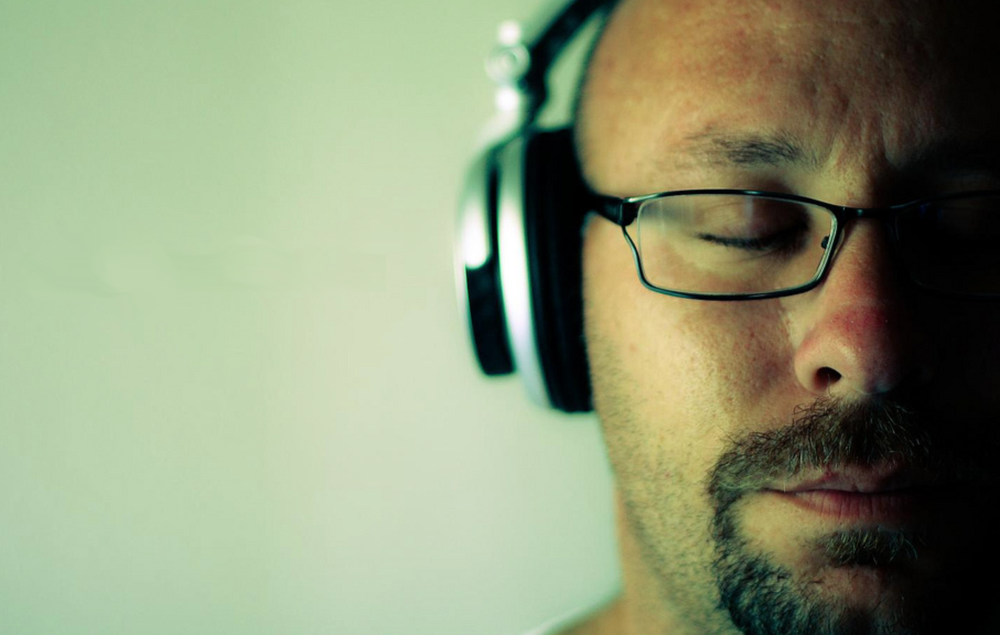

<ion-view view-title="Relaxation">
  <ion-content class="padding">
  <div on-swipe-left="turnpage('forward')">
  <div class="card">

    <div class="item item-divider">
        Using relaxation after surgery 
    </div>

    <div class="item-body">

      

      <marked>
Relaxing is not only pleasurable. Like sleeping, deep relaxation also promotes many changes in our bodies which improve health and wellbeing. 

For example, relaxation can: 


- Reduce blood pressure <!-- helping to avoid heart attacks or strokes. -->
- Strengthen our immune system<!-- , helping us to fight disease. -->
- Reduce pain and anxiety<!-- , and aid faster recovery. -->
      </marked>
    </div> 
  </div>


    
<div class="card">

    <div class="item item-divider">
          Different ways to relax
    </div>
    <div class="item-body">

      <marked>
  
      Everyone has their own ways of relaxing at home, but in hospital — away from familiar surroundings — it can be stressful. 

      But although we are away from familiar surroundings there are some simple methods to relax which can help everyone. These methods have been used by thousands of patients around the world to recover from surgery. 

      Using an audio recording makes it easy to relax. Below are some examples of the recordings for use after joint surgery:

      </marked>
    </div>
  </div>


<ion-list>

      <ion-item class="item-icon-right item-thumbnail-left" type="item-text-wrap" ui-sref="tabs.breathing">

        

        <h2>Relaxed breathing</h2>
        <p>Our breathing is closely linked to our emotions. When we're anxious we breathe quickly. When frightened, we sometimes hold our breath. When we're calm, safe, and relaxed we breathe slowly and deeply.</p>
        <i class="icon ion-chevron-right icon-accessory"></i>
      
      </ion-item>

      </ion-item>

      <ion-item class="item-icon-right item-thumbnail-left" type="item-text-wrap" ui-sref="tabs.pmr">

        

        <h2>Relaxing our muscles</h2>
        <p>Relaxing our muscles signals to the brain that we are safe, and that we should feel calm and at rest.</p>
        <i class="icon ion-chevron-right icon-accessory"></i>
      </ion-item>

      <ion-item class="item-icon-right item-thumbnail-left" type="item-text-wrap" 
        ui-sref="tabs.place">

        

        <h2>Imagining a peaceful place</h2>
        <p>It's surprising, but our bodies and emotions respond strongly to images we see or imagine. You can become calm and relaxed by imaginging yourself in a place that is safe, peaceful, and welcoming.</p>
        <i class="icon ion-chevron-right icon-accessory"></i>
      </ion-item>

</ion-list>


<div class="card">

  <div class="item item-divider">
      The next step: using positive suggestion
  </div>
  <div class="item-body">
      <marked>
      In addition to relaxing, many patients find it helpful to visualise positive sensations and outcomes. 

      Positive suggestions can reduce pain and discomfort, and may help you to get moving again after surgery
      </marked>

      <a class="button button-full icon-right ion-chevron-right button-balanced" href="#/tab/suggestion">
        How to use positive suggestions
      </a>
  </div>
</div>

</div>

  </ion-content>
</ion-view>      
